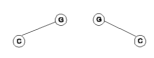
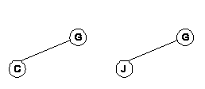
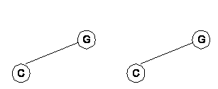

Clasificación de arboles Binarios
Distinto
Se dice que dos árboles binarios son distintos cuando sus estructuras son diferentes. Ejemplo:

Similares
Dos arboles binarios son similares cuando sus estructuras son idénticas, pero la información que contienen sus nodos es diferente. Ejemplo:

Equivalentes
Son aquellos arboles que son similares y que además los nodos contienen la misma información. Ejemplo:

Completos
Son aquellos arboles en los que todos sus nodos excepto los del ultimo nivel, tiene dos hijos; el subarbol izquierdo y el subarbol derecho.